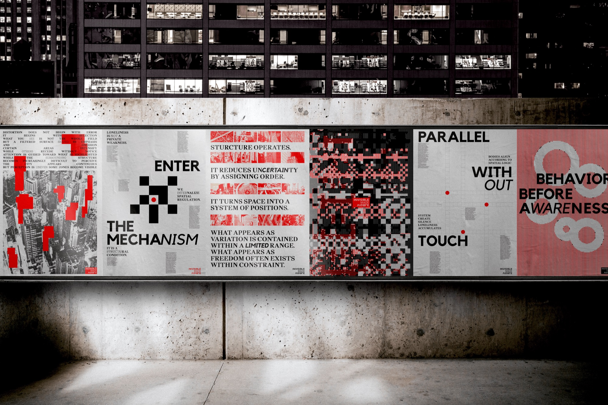
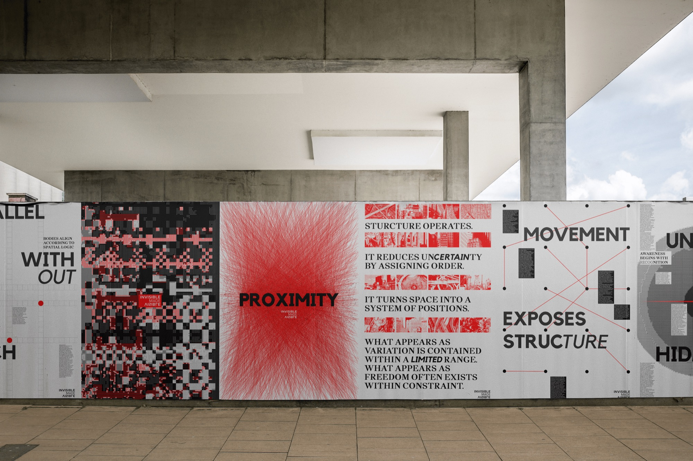
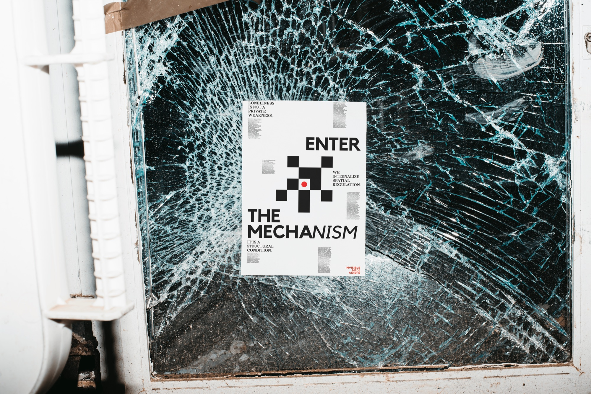
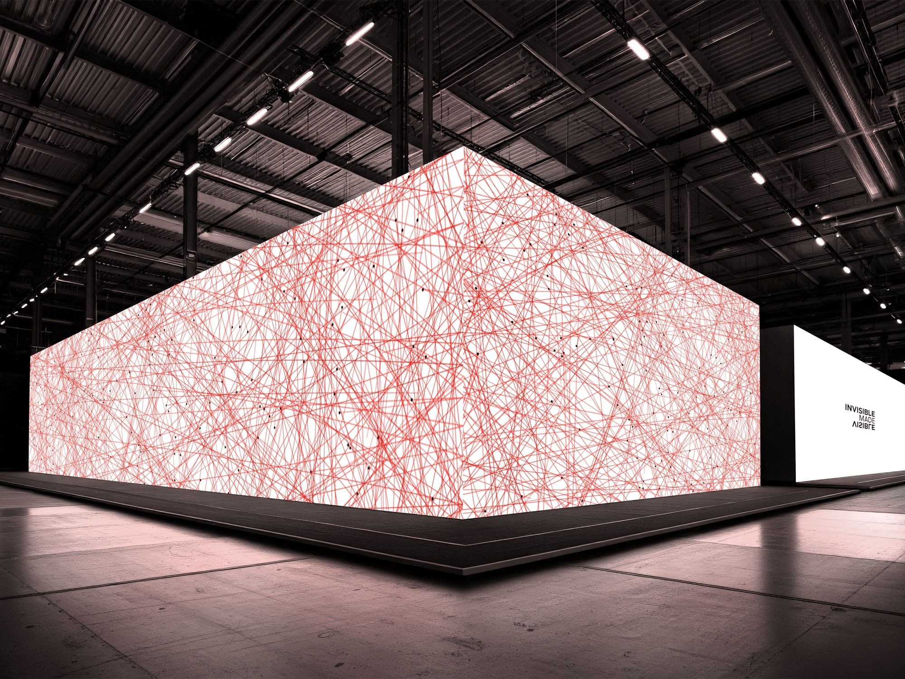
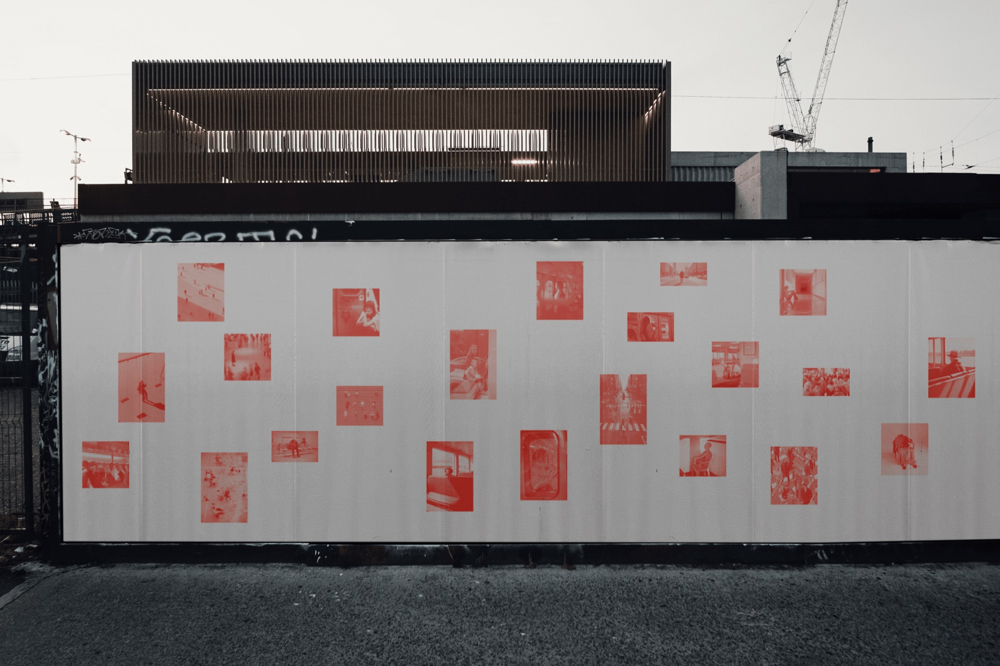
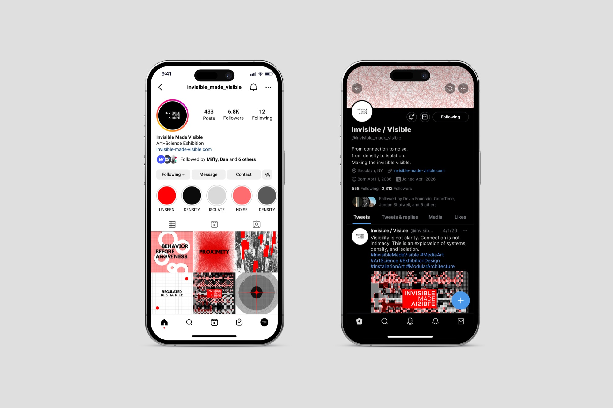
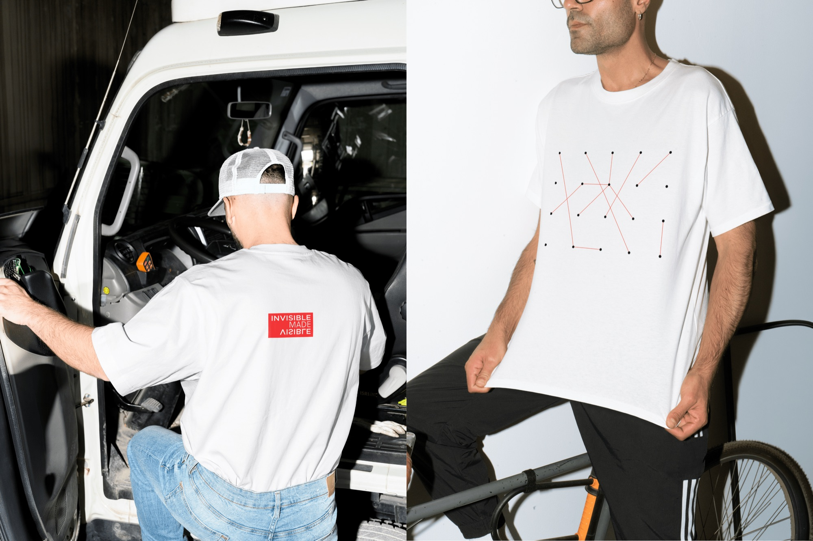
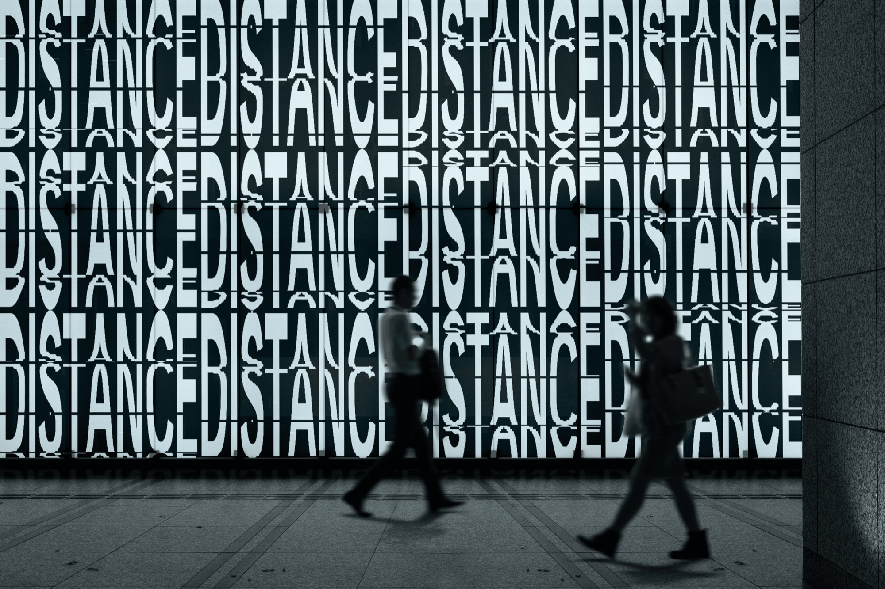
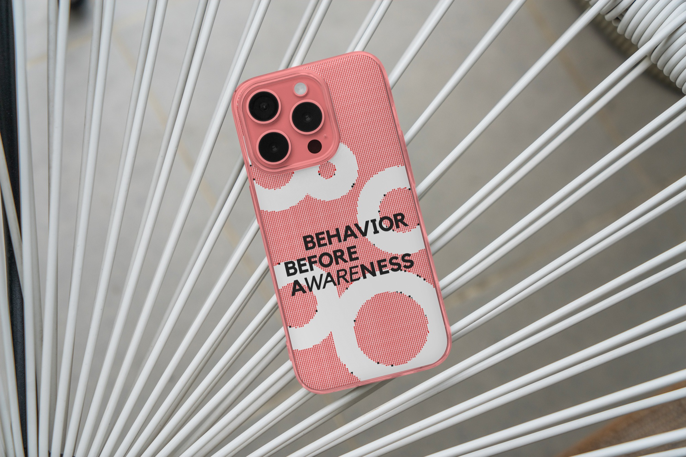
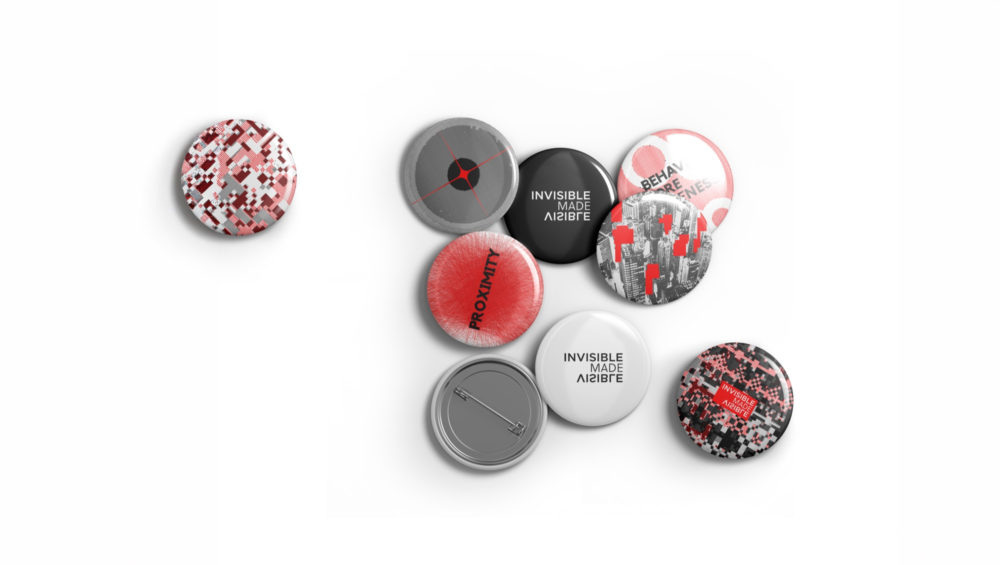

Invisible Made Visible: Invisible Made Visible explores the paradox of connection within dense urban environments. It visualizes how structured systems, architecture, information, and proximity, shape human relationships, while simultaneously producing isolation. Through a series of spatial and visual narratives, invisible conditions such as distance, distortion, and emotional detachment are translated into tangible forms. Order gradually shifts into accumulation, then into noise, where clarity dissolves and meaning becomes unstable. What appears as connection begins to fragment. What is visible no longer guarantees understanding. By making the invisible visible, the project reveals a critical tension: in a world of constant proximity, true connection becomes increasingly fragile.










